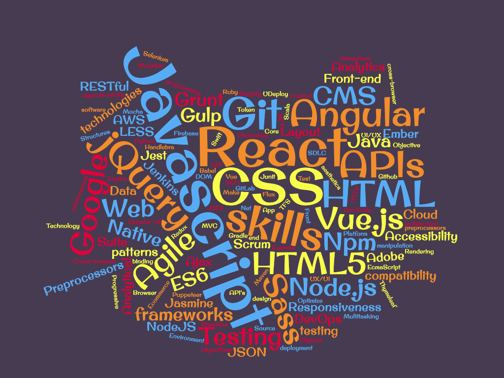
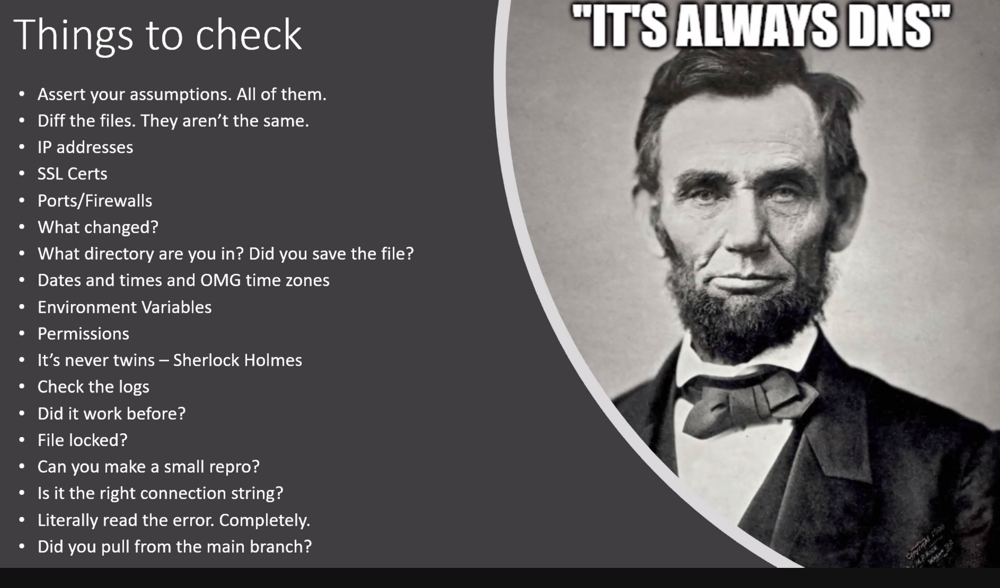

Thursday, November 19, 2020
Getting Hired in Tech
A 2-day learning and networking event by Sector and Grant Answers. Presented by Amina Yamusah and Camille Eddy from Sector.
Day 1: Shanea Leven founder/CEO CodeSee
Shanea had a lot of great info about confidence, the Informational interview, job interviews, finding a mentor, and answered questions about career switching and transitioning from internships or apprenticeships.
Day 2: Scott Hanselmann, OpenSource, .NET, Microsoft
Scott spoke about becoming a Social Developer, the three ways of thinking about code, the hiring process, and answered questions about projects, interviewing, and using LinkedIn.
The speakers and organizers of this event were terrific. I learned so much from them and can't thank them enough. These are my overall takeaways from the event. There were book recommendations throughout.
Confidence
Confidence is faked until you have it. To gain confidence over gaps in your background, first you have to decide where you are trying to go. You have to pick a job title you are aiming for. Then, go to LinkedIn. Look at job descriptions for this title. The keywords and skills listed are what you should be working on. Make a list of all the skills you see in several listings. You can make a wordcloud of your findings here. The biggest words are the skills you need to focus on most. Have some knowledge of the other words in the cloud so you can talk your way through the interview.
Book recommendation: Unapologetically Ambitious: Take Risks, Break Barriers, and Create Success on Your Own Terms by Shellye Archambeau Unapologetically Ambitious
The Informational Interview
These are things to ask someone who works at a company you want to apply to before you actually apply there. You're not asking them for help or an interview or anything else. Just some general info. My husband has assured me that people love to talk, and most people will be happy to oblige these simple conversations.
Things to ask:
- What do you do?
- How do you accomplish that?
- How does someone like me get to where you are?
- Do you like the culture?
Failure
It's good to know where you are in your career, know the terrain, and know how to open doors. Know what to do when
you hit that first glass door failure.
Shanae says she fails all the time because she takes risk. Risk in the jobs she has chosen, picking between a safe
bet and a crazy risky role. Know and expect failure because it absolutely will happen. Know that it will still suck even
when you expect it.
Sometimes that risk was taking jobs she knew would be toxic. It is easier to make change from the inner circle. So
if you're up for it, you can take the job where you are an absolute outsider and fight your way through. You learn to
navigate people's expectations and preconceived notions about you. Dispel them as quickly as possible and try to
overcome the pattern-matching that others put on you.
Everyone handles failure differently. You may need to self care for a few days. You may be able to jump right back
in. Scott shared that his mother would set a 22 minute timer. "You have 22 minutes to feel bad about this. Scream, cry,
get it out." When the timer goes off, it's back to work. Put it behind you.
On a personal note, in rowing, we have bad strokes all the time. Everyone in the boat knows it was you. It's
embarrassing. You have to immediately forget the bad strokes or else they just permeate all the next ones.
Do code challenges every day
Mentors
Mentors give you an easy path to help you map out a career trajectory. It helps to find someone who mirrors your identity. Look for mentors everywhere: in your industry, not in your industry, a couple steps ahead of you, possibly younger than you are. Be involved in their lives as much as you can, not just when you need advice. Have a million mentors, but also, don't underestimate the power of peer-to-peer relationships. Finding a mentor:
- Network at conferences and follow up to ask to connect again
- Reach out to industry experts on Github after learning about their work via a presentation (i.e. YouTube)
- Cold networking on LinkedIn
- or use sites like rocketreach.co to get email addresses
- Don't just look for a mentor, look for a sponsor as well
- A mentor will give you advice from above
- A sponsor will pull you up to their level
- Find your board of directors Who is on your Life's Board of Directors? book
Your non technical background is NOT a disadvantage
We are all amateurs. There are no professionals in this industry, there are people that are learning faster. Having a CS degree from 20 years ago means you learned a lot of stuff that is not in use now. You have to learn how to learn and how to not give up. Everyone feels like a phony. Are you paying attention? Do you know more than you did last week? The Imposter's Handbook was written by a guy with a geology degree who became a great programmer. Imposter syndrome is real. See the confidence section above.
Social Developer
Get involved. Blogging. Twitter. Github. Stack Overflow. User Groups. YouTube. Twitch. Podcasts. Speaking. You don't have to do all of them. But pick one or two. You don't need to be an expert on the thing you are blogging/tweeting/youtubing about. These are your journey and the things you are working on.
Blogging
Take notes on what you are already doing and document it. You are creating an artifact that honors what you are working on. You don't need to have thousands of followers to be a blogger. You are keeping a record for yourself. If you blog your notes on a site that you own, you'll be able to search yourself and the topic and find your notes easily.
It is a living resume. Blogging is proof of your technical writing ability. It is also the ability for you to answer a question in perpetuity. If you answer a question by email, text, or other messaging service, that answer only lives in that private space. If you write a short blogpost about it, the answer is out there for anyone else with the same question.
Putting your blog on your own site will allow you to make commits and boost your Github stats. You can host your site for free on Github Pages. There is also a way to get free hosting on azure. It may be slightly complicated, but you will have some cloud knowledge to put on your resume as well.
Three ways of thinking of code
Systematic Thinking, Syntax, Text Editing
Systematic thinking is asking yes/no questions at scale. Early in your career you google a lot; later in your career
you
ask questions that eliminate large numbers of problems at once.

Syntax is the code itself. Learn the code. Know the code.
Text editing is how we move around text. We all go crazy when that one person takes seven mouseclicks to copy/paste
one thing. Learn the keyboard shortcuts in whatever program or website you are on. They are often similar. Gmail has
shortcuts. Github has shortcuts. Customize your VSCode. Did you know if you hit ctrl + g + number you will go to that line of code??
Learn to customize VSCode here.
The Hiring Process
Rethinking how we interview in Microsoft's Developer Division article here. Microsoft is in the process of losing whiteboarding from interviews. Instead, the process will be a take-home assignment brought back after a couple of days and then explained fully. This more realistically mimics the work environment. Pair programming, a senior dev using LiveCode with an interviewee is also becoming more common. It is on all of us to to demand the interviewing process that we all would like to have. While that may not be possible when you are out of work and rent is due, whenever possible we should question things that seem ridiculous. If you are in an interview with a lot of whiteboarding, politely ask if there is a lot of whiteboarding in the job itself? A list of companies that do not do whiteboarding in interviews As a career changer, we need to be honest about the gaps in our knowledge. If you get a question about bubble sort and you don' know what it is, tell them, "I don't have a CS degree. I'm going to end up googling bubble sort." Justown it. However, if you have done your wordcloud from earlier, you may have at least heard of some stuff that comes up in the interview. Reinforce what you DO know. "I have heard of data binding but I don't know much about it. I have worked in MVC pattern and am comfortable with it. I can learn data binding in short order." [AlgoDaily - Daily coding interview questions. Full programming interview prep course and software career coaching.](https://algodaily.com/)
The Interview Loop
How to get passed the application and to the actual interview
Send hundreds of resumes
We are in a very competitive market. Blast out as many applications as you can no matter the job or the company. Don't worry about the long list of asks on the job listing. It is possible that the engineer who wrote that list is fearful of their own position. So if you don't know Angular, Vue, C#, Java, Sass, LESS, *and* Go, it's ok. Apply anyway. The worst that happens is a really bad interview. Those are going to happen anyway.
The Warm Intro
The warm intro can get your resume to the top. It won't get you the interview but it can get eyeballs on your resume.
Networking to get the warm intro:
- Be in spaces where people want to bring you in. Be visible. Meetups. Accelerators. Hackathons.
- Volunteer in a public way
- Let people know how to help you. Tell them what you are looking to do.
- If a recruiter talks to you about a position you are not interested in, tell them, "I am interested in jobs with this title."
- This process may take longer than you think
- Lean in on your expertise, let that help you stand out
- Sometimes hiring is based on a specific goal. You won't know that goal when you're applying, but you may be the intersection they are looking for. Let people know your intersection
- The way to use LinkedIn is to get off LinkedIn. Get to know this person. Have conversations. When you are able to talk to them by text or Whatsapp, they know you. People who know you will give you the warm intro.
- Use Lunch Club to connect with people and get to know them.
After the interview, when you start getting offers, then you can filter by how you feel about the company and their values.
You should be interviewing every day
Projects, Practice, Open Source
Projects
Build projects that solve problems. The problem itself doesn't matter.
- A program that shoots squirrels with a water gun when they are eating the tomatoes
- A raspberry pi connected to the garage that tells me when I left the door open
- An easy button that orders pizza
Find beginner's Python videos here.
Open Source
Working on OpenSource projects is a great way to keep your Github stats green. It's good practice in pull
requests
and working on established code. There are often opportunities to do documentation as a first step if you're not
ready for actual code.
This site is to help first time OpenSource contributors: First Timers Only
Practice
Repetitive motion builds muscle memory. Practice.